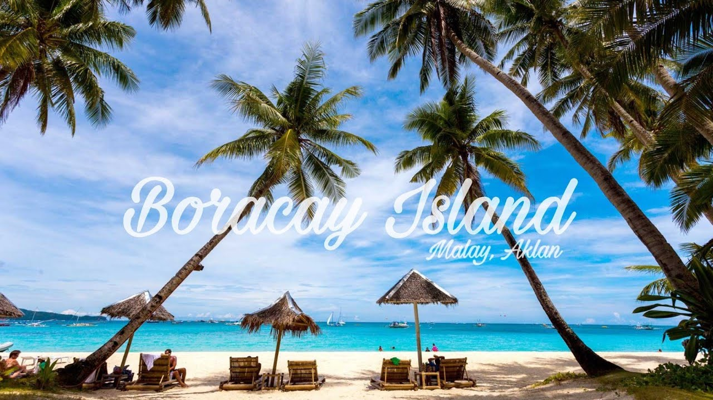

Siargao is a tear-drop shaped island in the Philippine Sea situated 196 kilometers southeast of Tacloban. It has a land area of approximately 437 square kilometres (169 sq mi). The east coast is relatively straight with one deep inlet, Port Pilar. The coastline is marked by a succession of reefs, small points and white, sandy beaches.

Boracay often locally shortened to Bora is a resort island in the Western Visayas region of the Philippines, located 0.8 kilometers (0.50 mi) off the northwest coast of Panay. It has a total land area of 10.32 square kilometers (3.98 sq mi), under the jurisdiction of three barangays in Malay, Aklan, and had a population of 37,802 in 2020.